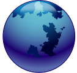

name: title class: title background-image: url('ppf.jpg') # Canvas Accessibility ## Past, Present and Future .footnote[Boston Accessibility Conference<br>10 MAY 2014<br>Mark Sadecki ([@cptvitamin](http://twitter.com/cptvitamin))<br>[http://j.mp/a11y-canvas](http://j.mp/a11y-canvas)] --- name: joke class: very-large The past,<br> the present,<br> and the future<br> walked into a bar. It was tense. --- # Agenda 1. [Introductions](#intro) 2. [Accessibility Challenges of HTML5 ```<canvas>```](#challenges) 3. [Past, Present *(and Future...)* Solutions](#challenges) 4. [Designing an accessible game using HTML5 ```<canvas>```](#game) --- name: intro # Introductions ## Mark Sadecki ([@cptvitamin](http://twitter.com/cptvitamin)) * World Wide Web Consortium (W3C) * Web Accessibility Initiative (WAI) * Staff Contact * HTML Accessibility Task Force * Canvas Sub Group * *Media Sub Group* <a href="#recruits" aria-describedby="recruits" aria-label="see footnote" class="noline">*</a> * *Bug Triage* <a href="#recruits" aria-describedby="recruits" aria-label="see footnote" class="noline">*</a> <span id="recruits" class="blue footnote">* Looking for recruits (contact [mark@w3.org](mailto:mark@w3.org))</span> --- class: title, center, middle name: challenges # ```<canvas>```<br>Accessibility Challenges --- # What is ```<canvas>```? .pull-left[ ## Canvas is: A 2D drawing API that includes drawing functions for rendering interactive bitmap images ] .pull-right[ ## What is it Good For? * Graphs * Animations * Games * Image Manipulation ] * Appeared in OS X in 2004 * Appeared in WHAT WG spec in 2006 --- class: left-center .left-column[ # Challenge #1 ] .right-column[ ## No content to interact with ```html <canvas id="magic" width="350" height="196"> ``` .center[  ] ```html </canvas> ``` ] --- class: left-center .left-column[ # Solution #1  ] .right-column[ ## Fallback content ```html <canvas id="magic" width="350" height="196"> <h1>Magic trick</h1> <ol> <li>Find a unicorn</li> <li>Coax it under your coat tails</li> <li>Misdirect audience (flash of smoke? sneeze on first row?)</li> <li>Reveal unicorn</li> </ol> </canvas> ``` ] --- # Fallback Content * Solution has been around since 2010 * Well supported by browsers and <span aria-label"Assistive technology" title="assistive technology">AT</span> * Solution was in HTML5, not in ```<canvas>``` .pull-left[ ## Pros * Useful if author wants to provide a text alternative for canvas content ] .pull-right[ ## Cons * Not programmatically linked with the ```<canvas>``` itself ] --- class: left-center .left-column[ # Challenge #2 ] .right-column[ ## No association between pixels/paths and fallback elements * Anything drawn to ```<canvas>``` is just a bitmap/pixels * No programmatic relationship between those pixels and fallback elements * No way to inform AAPIs of the location of those pixels * No way to pass ```Events``` on the canvas to the associated fallback elements. ] --- class: left-center .left-column[ # Solution #2 ] .right-column[ ## Hit Regions * Defines the 'hit region list' * ```addHitRegion(id, control)``` * Method for associating a current path with a fallback element * ```removeHitRegion(id)``` * Removes a hit region from the 'hit region list' * ```clearHitRegions()``` * Removes all hit regions from the 'hit region list' * Defines how MouseEvents are handled ] --- class: left-center .left-column[ # Challenge #3  ] .right-column[ ## No visual focus indicators * Focus indicators are crucial for anyone using a keyboard * No (supported) standard method for indicating focus in HTML5 ```<canvas>``` * Without standard/easy method of doing so, authors are unlikely to roll their own. ] --- class: left-center .left-column[ # Solution #3 ] .right-column[ ## ```drawFocusIfNeeded(element)``` * New method with a new name * Draws a focus indicator around the current path if the fallback element associated with that path currently has focus. * Scrolls current path into view if path is off screen (not beyond bounds of canvas) * Informs Accessibility API of the location of the currently focused element. ] --- class: left-center .left-column[ # Can I Use? 10 MAY 2014 ] .right-column[ ## So present it could be *future*  Currently only supported by [Firefox Nightly ](https://nightly.mozilla.org/) 31.0a1+ (2014-04-26) *with* experimental flags enabled: ``` canvas.focusrings.enabled true canvas.hitregions.enabled true ``` ### Setting flags in Firefox .center[] ] --- class: title, center, middle name: game # Building an Accessible Game using HTML5 Canvas --- # Challenges * I'm **NOT** a game designer * The game needs to use all of these new features... * ...that were implemented two weeks ago * The game needs to showcase the accessibility benefits of these new features * *there will be no googling for techniques or error messages* * I'll need to design/build/test in one week .center[.blue[**This will be no "[Call of Duty](https://en.wikipedia.org/wiki/Call_of_Duty)"**]] --- # Guiding Principles Game should be: * Useable by keyboard users * Useable by screen reader users * Useable by screen magnification users * Equally challenging for all --- # Whac-a-mole * Easy enough... * Simple enough concept. * Should allow me to showcase new features and satisfy all my guiding principles --- # Deviations from Whac-a-mole * There will be two characters rather than one * One is bad and should be "Whacked" (+10 points) * The other is good and should not be "Whacked" (-10 points) * Fixed number of opportunities to score (10) * We're not whacking moles here * My daughter suggested characters from her favorite video game, [Minecraft](https://en.wikipedia.org/wiki/Minecraft) * I agreed since they would be relatively easy to draw using ```<canvas>``` * We chose "[Creepers](http://minecraft.gamepedia.com/Creeper)" (*bad*) and "[Steve](http://minecraft.gamepedia.com/Steve)" (*good*) * Game will be called "Whac a creeper, not a Steve" --- # Game play * Player moves focus to, and then activates Start button * Characters randomly appear on the board, pausing between each * Player either clicks or hits "Enter" key on Creepers to score 10 points * Game ends when 10 Creepers have appeared on the board --- class: title, center, middle # Game mechanics --- # The Board ```html <canvas id="game" width="150" height="200"> <div id="status" tabindex="0" aria-live="aggressive">Start</div> <div id="00"></div> <div id="01"></div> <div id="02"></div> <div id="10"></div> <div id="11"></div> <div id="12"></div> <div id="20"></div> <div id="21"></div> <div id="22"></div> <div id="oob" tabindex="0">Out of Bounds!</div> </canvas> <p aria-live="polite">Score: <span id="score">0</span></p> ``` --- # Draw the character * Game starts * A random character is drawn in one of 9 grids * A transparent hit region is drawn over the character and associated with corresponding fallback element * That element is made focusable (tabindex=0) * That element's text content is updated with the name of that character * Focus is moved to a neutral location --- # Drawing the character Drawing squares in ```<canvas>``` is easy ```javascript ctx.beginPath(); ctx.fillStyle = color; ctx.rect(x, y, 5, 5); ctx.fill(); // color grid for creeper var creeper = [ ["#7D9C79", "#008000", "#348828", ... "#366B36"], ["#599A4C", "#7D9C79", "#62A853", ... "#789776"], ["#008000", "#292929", "#2B2B2B", ... "#366B36"], ["#348828", "#2D2D2D", "#000000", ... "#93939C"], ... ["#789776", "#7D9C79", "#4A4A4A", ... "#62A853"], ]; ``` --- # Steve! .center[ <canvas id="steve" width="400" height="400"> <p>A rendering of Steve from Minecraft. Minecraft characters are composed of 3d grids of solid colored blocks, so Steve's face, shown here in 2d is an 8 x 8 grid of colored squares.</p> </canvas> ] --- # Player takes action (or not) * Player clicks on character *or* * Uses Tab key to move focus to that character and press the Enter key * If player is using a screenreader, the name of the character will be read aloud when focus is moved to it * Score is calculated and updated * If player does not take action, the game times out and the board is refreshed --- class: title, center, middle # Accessibility --- # Hit Regions * Each time a character is drawn on the grid, a transparent square is drawn over the character. * A Hit Region associates that square with the corresponding ```<div>``` * Accessibility APIs are informed of the location of that region as if it were the location of the fallback element * The player's screen will move to that location if the player is using magnification software --- # Hit Region Script ```html // draw a button and assign a Hit Region to it function drawButton( text, id ) { ctx.beginPath(); ctx.fillStyle = "green"; ctx.rect( 0, 0, 100, 30 ); ctx.fill(); ctx.addHitRegion( { id: id, control: document.getElementById(id) }); } ``` --- # ```drawFocusIfNeeded(element)``` Whever a focus change event occurs, the ```drawFocusIfNeeded()``` method is invoked and an indicator, consistent with the default focus indicator for the browser and operating system is drawn on the canvas. * Focus change events * Mouse click on a Hit Region * Tab press * Clear grid/Reset board --- # Draw Focus Script I called this function whenever I drew a path to the Canvas that was associated with a fallback element and I wanted to move focus to it. ```javascript function drawFocus( elem ){ elem.focus(); ctx.drawFocusIfNeeded( elem ); } ``` --- class: very-small # Let's play! * This game only works in [Firefox Nightly ](https://nightly.mozilla.org/) 31.0a1+ *with* ```canvas.focusrings.enabled``` and ```canvas.hitregions.enabled``` set to **true** * It is currently short on features (Game Over, Play again, grid and speed adjustments, etc.) * Only limited testing with speech and magnification .pull-left[ .center[ ## [Play Game](whac.html) .small[.blue[View presentation:<br>[http://j.mp/a11y-canvas](http://j.mp/a11y-canvas)]] ] ] .pull-right[ .center[ ## [Github](https://j.mp/a11y-whack) .small[.blue[Issues and Pull Requests<br>are welcome:<br>[http://j.mp/a11y-whack](http://j.mp/a11y-whack)]] ] ]